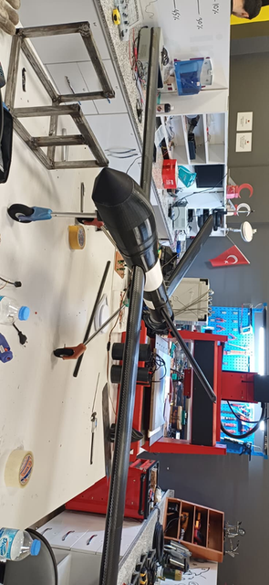

Geometry, packaging, component integration and mission requirements.
UAV · AEROSPACE · R&D · SIMULATION
Engineering from geometry to flight.
Mechanical Engineering student working across aircraft and drone design, aerodynamic and structural analysis, topology optimization, manufacturing and mission-oriented engineering.
0Featured projects
0Team / R&D roles
CAD → CAEDesign to validation
SOLIDWORKS◆ANSYS MECHANICAL◆ANSYS FLUENT◆XFLR5◆nTOP◆SIEMENS NX◆MATLAB◆UAV DEVELOPMENT◆
SOLIDWORKS◆ANSYS MECHANICAL◆ANSYS FLUENT◆XFLR5◆nTOP◆SIEMENS NX◆MATLAB◆UAV DEVELOPMENT◆
01
ABOUT
SYSTEM-ORIENTED ENGINEERING
I do not stop at the CAD model.
My work connects mechanical design, aerodynamics, structural simulation, topology optimization and manufacturing to build and validate complete engineering systems.
My main focus is UAV and aerospace development, supported by hands-on experience with composite manufacturing, CNC-supported fabrication, simulation-driven design and technical visualization.
Aircraft & drone development
CFD & structural analysis
Topology-driven lightweighting
Manufacturing & prototyping
R&D test systems
CFD, FEA, XFLR5 and topology-based performance evaluation.
Composite, CNC-supported and additive manufacturing workflows.
Flight, mechanism and safety-focused validation in real conditions.
02
PROJECTS
SELECTED ENGINEERING WORK
Built. Simulated. Tested.

01 / UAV · MECHANICAL DESIGN↗
Autonomous Search & Rescue — Drone
Multirotor platform designed with lightweight construction, component integration and structural layout as key design drivers.

02 / UAV · DESIGN & MANUFACTURING↗
Autonomous Search & Rescue — Fixed Wing
Fixed-wing UAV platform developed for mission-oriented search and rescue operations.

03 / UAV · DEVELOPMENT↗
Surveillance & Reconnaissance UAV
Practical UAV platform developed for observation, monitoring and field reconnaissance missions.

04 / BIOMEDICAL · VISUALIZATION↗
Surgical Animation & Titanium Post-Processing
Surgical visualization for procedure communication plus sanding and polishing of manufactured titanium components.

05 / R&D · TEST ENGINEERING↗
Trailer Rear-Impact Test System
Driverless test setup with steering and release mechanisms for controlled safety testing of a rear-impact system.

06 / CFD · FEA · XFLR5↗
TEKNOFEST Combat UAV Analysis
Aerodynamic and structural evaluation using ANSYS Fluent, ANSYS Mechanical and XFLR5.

07 / TOPOLOGY · STRUCTURAL DESIGN↗
Topology-Inspired UAV Frame
Lightweight UAV frame structurally evaluated, manufactured and used to explore organic topology-driven design.
03
EXPERIENCE
FROM UNIVERSITY TEAMS TO APPLIED R&D
Engineering in real workflows.
NOV 2024 — PRESENT
Mechanical Design Team Member
ETÜKEN UAV Team · Erzurum, Türkiye
Aircraft and drone design in SolidWorks; structural analyses in ANSYS Mechanical; aerodynamic analyses with XFLR5 and ANSYS Fluent; composite and CNC-supported manufacturing.
SEP 2025 — PRESENT
Project Team Member
Makist R&D Engineering · Erzurum, Türkiye
Contributed to a driverless rear-impact test vehicle system, including steering control, release mechanism development and practical evaluation of an energy-absorbing safety system.
JUL 2025 — DEC 2025
Animation & Post-Process Specialist
Add4Bio · Erzurum, Türkiye
Created surgical animations and technical visualizations in Blender and carried out post-processing of manufactured titanium and PLA parts.
04
SKILLS
ENGINEERING TOOLKIT
Design, analyze, manufacture.
CAD & Design
SolidWorks · AutoCAD · Siemens NX · Blender
Simulation & Analysis
ANSYS Mechanical · ANSYS Fluent · XFLR5 · MATLAB
Topology & Modeling
nTop · topology optimization · mathematical modeling
UAV Systems
Aircraft and drone development · design · manufacturing · flow analysis · FPV operation
Manufacturing
Composite structures · epoxy/fiberglass · CNC-supported fabrication · additive manufacturing
Working Style
Simulation-driven problem solving · precision-focused work · system-oriented thinking
EDUCATION
Erzurum Technical University
Mechanical Engineering · 2022 — Present
LANGUAGES
Turkish · English
Native · B2
DOCUMENTS
05 / CONTACT
Have an aerospace, UAV or R&D problem?